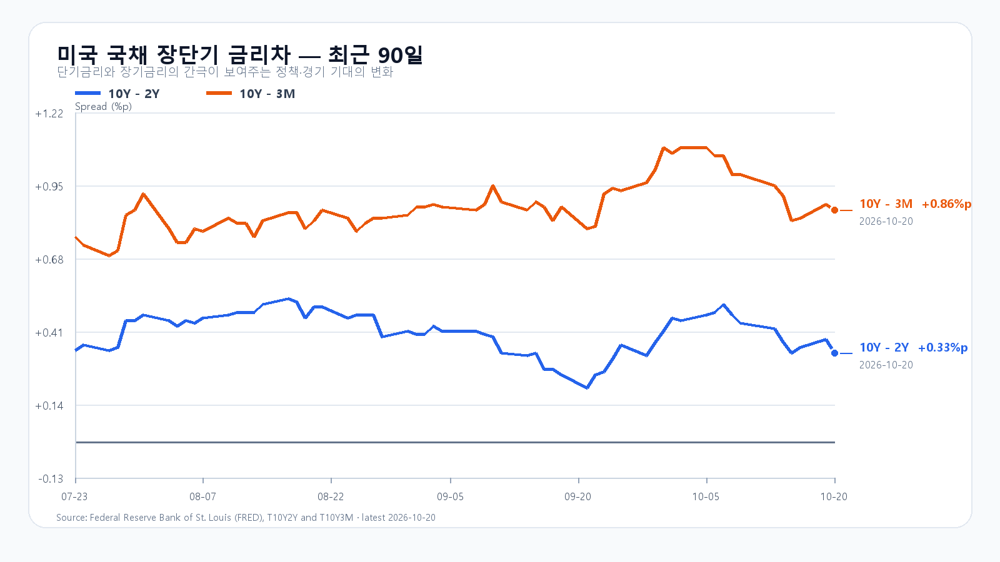
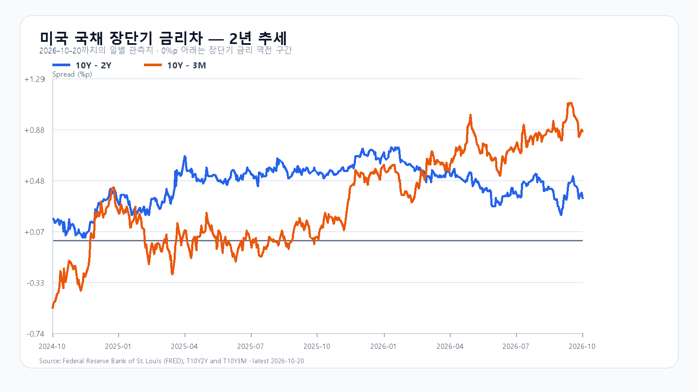

미국 반도체주는 정규장에서 밀렸지만 AI 서버 실적 발표 뒤 시간외에서 반등했습니다. 20일 정규장에서 SOXX와 SMH는 각각 0.38%, Micron은 0.98% 내렸습니다. 한국시간 오전 7시 58분 무렵의 시간외 최근 거래에서는 Nvidia가 정규장 종가보다 약 2.0%, AMD와 Micron이 약 2.5% 높았습니다. 전일 3.73% 급락한 KOSPI가 반등을 이어 가려면 수요 뉴스에 더해 국내 매도세가 줄어야 합니다.
주문 수요와 매출 사이에 남은 납품 병목
Reuters는 사안을 아는 소식통을 인용해 ByteDance·Alibaba·Tencent가 Nvidia RTX PRO 5500을 300만 장 넘게 주문했다고 보도했습니다. 표시가격 기준 350억달러가 넘지만 Nvidia가 주문 전량을 공급할 수 있는지는 불투명하다는 내용도 함께 전했습니다. 워크스테이션용 GPU의 주문 보도로, HBM 공급계약이나 확정 매출과는 구분해야 합니다. Reuters 보도
AI 설비 수요를 뒷받침하는 발표도 이어졌습니다. Supermicro는 2027회계연도 1분기 잠정 매출을 185억~195억달러로 제시해 기존 전망 145억~155억달러를 웃돌았습니다. 최종 결산 전 추정치입니다. Amazon은 2027년 독일 투자 계획을 내놨습니다. Amazon의 전체 투자 160억유로 가운데 AWS 프랑크푸르트 클라우드·AI 인프라 몫은 48억유로입니다. 전체 투자액에는 물류·위성통신·콘텐츠도 포함됩니다. Supermicro 발표 · Amazon 발표
현물 메모리는 버티지만 성장주 평가는 까다롭다
20일 대만시간 오후 6시 10분 기준 DDR5 16Gb 현물 평균은 60.70달러로 0.11% 올랐고 DDR4 16Gb는 83.364달러로 0.06% 내렸습니다. 메모리 수요가 한꺼번에 꺾인 모습과는 거리가 있지만 제품별 가격 차이는 남아 있습니다. 이 현물 가격만으로 HBM·서버 메모리의 계약 물량과 이익을 확정할 수는 없습니다. TrendForce 현물 가격
Netflix는 3분기 매출이 전년보다 12% 늘었다고 밝혔지만 연간 광고매출 전망은 약 30억달러에서 27억달러로 낮췄습니다. 반도체의 직접 수요 지표는 아니어도 성장주 투자자가 매출의 질과 향후 전망을 따지는 분위기를 보여 줍니다. Netflix 주주서한
KOSPI 5,550선 회복을 먼저 본다
전일 KOSPI는 시가이자 고가인 5,733.57에서 밀려 5,552.74로 마쳤고 장중 저점은 5,493.24였습니다. 한국에서 이미 발생한 급락과 뒤이은 미국 반도체 약세를 별개의 충격으로 모두 더할 필요는 없습니다. 오늘은 5,550선 위로 올라선 뒤 외국인·프로그램 매도가 줄어드는지가 먼저입니다.
기본 종가 범위는 5,450~5,650(45%)으로 봅니다. 외국인·프로그램이 함께 순매수하고 5,650선을 넘겨 유지하는 강세 범위는 5,650 초과~5,800(20%)입니다. 5,450선 아래에서 매도가 이어지는 약세 범위는 5,200~5,450 미만(35%)입니다. 예상 범위를 벗어나는 변동도 가능합니다.
KODEX 레버리지는 전일 저점 65,335원을 첫 지지, 종가 67,170원을 반등 기준, 고점 71,300원을 저항으로 봅니다. 65,335원 아래에서 회복하지 못하면 지지 판단은 무효입니다. 개장 직후 한 차례 매수보다 오전과 오후에 매수가 이어지는지가 중요합니다.
다음 실적과 자금 조달 비용
Tesla는 미국시간 21일 장 마감 뒤 실적을 발표하고 한국시간 22일 오전 6시 30분에 설명회를 엽니다. 다음 FOMC는 미국시간 27~28일입니다. 20일 미국 10년물과 2년물 금리차는 0.33%포인트, 10년물과 3개월물은 0.86%포인트였습니다. 금리차와 함께 금리 자체의 수준도 기업 자금 조달 부담을 판단하는 기준입니다.
장전 시세
| 항목 | 최근값 | 원천 시각 |
| 삼성전자 NXT (OPEN) | 217,000원 · 2.60% | 2026-10-21T08:04:40.021326+09:00 |
| SK하이닉스 NXT (OPEN) | 1,252,000원 · 2.37% | 2026-10-21T08:04:40.021336+09:00 |
| 하나은행 USD/KRW 고시 | 1,327.00원 | 2026-10-21T07:02:35+09:00 |
| NQF 최근 거래 | 29,911.75 | 2026-10-21T07:54:35+09:00 |
| ESF 최근 거래 | 7,776.50 | 2026-10-21T07:54:36+09:00 |
| CLF 최근 거래 | 98.16 | 2026-10-21T07:53:57+09:00 |
| BZF 최근 거래 | 109.12 | 2026-10-21T07:50:41+09:00 |
미국 시간외 최근 거래
| 종목 | USD | 종가 대비 | 원천 시각 |
| NVDA | 220.88 | +2.04% | 2026-10-21T07:58:42+09:00 |
| AMD | 548.24 | +2.52% | 2026-10-21T07:57:42+09:00 |
| MU | 918.50 | +2.50% | 2026-10-21T07:58:30+09:00 |
| AVGO | 338.69 | +1.29% | 2026-10-21T07:58:11+09:00 |
미국 정규장
| 종목 | 종가 USD | 등락 |
| QQQ | 717.63 | -0.10% |
| TQQQ | 70.41 | -0.33% |
| SOXX | 500.01 | -0.38% |
| SMH | 546.36 | -0.38% |
| NVDA | 216.47 | -0.29% |
| AMD | 534.74 | -0.62% |
| MU | 896.07 | -0.98% |
| AVGO | 334.37 | -0.07% |


미국 시세 · 국내 일봉 · DRAM 현물 · 중국 GPU 주문 Reuters · Netflix 주주서한 · Supermicro 잠정실적 · Amazon 독일 투자 · BLS 일정 · Tesla 일정 · FOMC · FRED